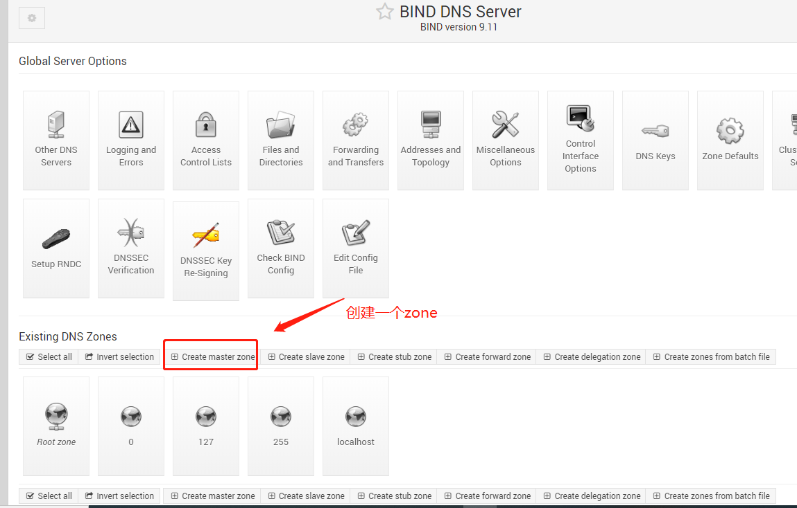
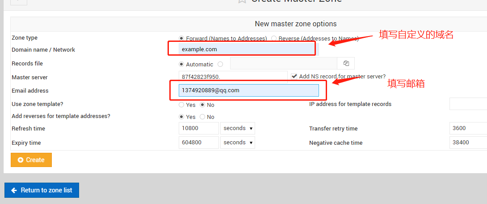
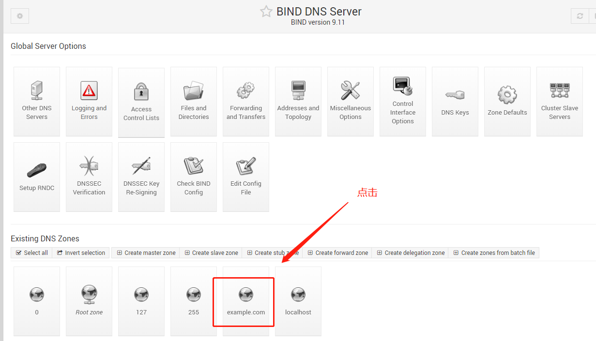
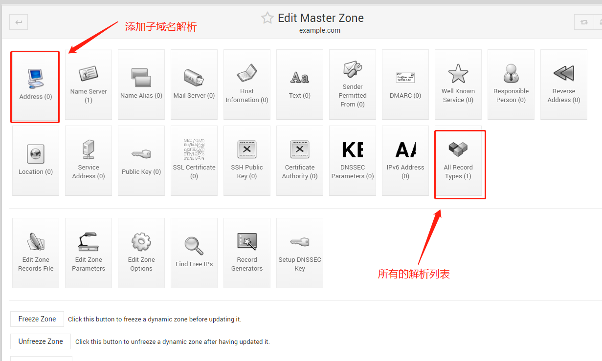
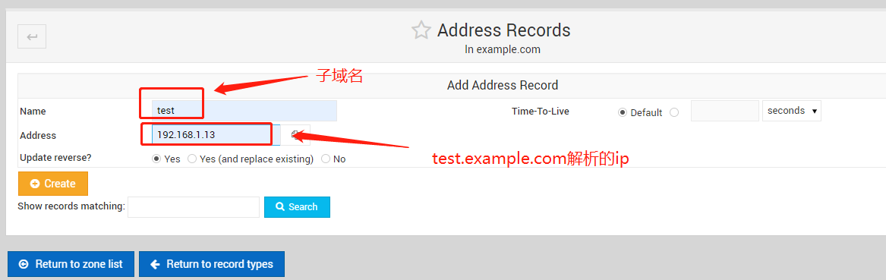

1 | # docker run -d --name=bind --dns=114.114.114.114 --dns=8.8.8.8 -p 53:53/udp \ |
1 | # docker restart bind |
1 | # yum install bind-utils |
1 | # host www.jd.com 192.168.1.20 |
创建zone；

保存zone；

zone列表；

添加子域名解析；

保存子域名解析；

重启bind容器
1 | # docker restart bind |
测试是否解析成功；
1 | # host test.example.com 192.168.1.20 |